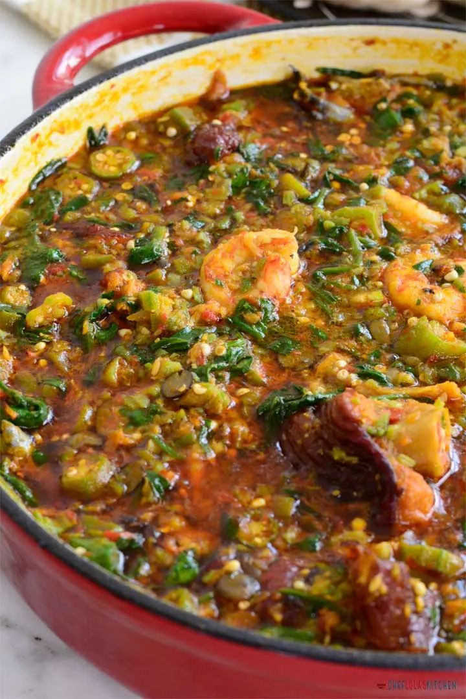

Home
Okra Soup Recipe

Description
Okra soup, also known as okro soup, is a popular and nutritious dish enjoyed in various cultures around the world, particularly in West Africa and the Southern United States.
It is prepared using the edible green seed pods of the okra flowering plant as a primary ingredient.
Ingredients
- Okra
- Meat of choice (recommended: beef parts, fish, goat meat)
- Salt
- Seasoning Cubes
- Onions
- Red Bell Pepper
- Habanero Pepper
- Locust Bean
- Spinach
- Palm Oil
Steps
- Start by creating a base stock for the okro soup by boiling the roast turkey or any other meat of choice with salt, seasoning cube, and onions. Cook till tender.
- While the meat is boiling, mince half of the onions in a food processor or a chopper and slice the other half. Set aside
- Mince the red bell pepper and habanero pepper in the chopper and set aside
- Once the meat is tender, add the minced pepper, onions, crayfish, and locust bean and leave to cook for about 10 minutes.
- Shred and add the washed dry fish and leave to soften for about 5 minutes.
- Add the palm oil and the shrimp and the minced and sliced okro. Leave to cook for about 3 to 5 minutes, depending on how crunchy you want the okro to be.
- Stir in the spinach and mix until wilted.
- Take away from heat immediately and serve.